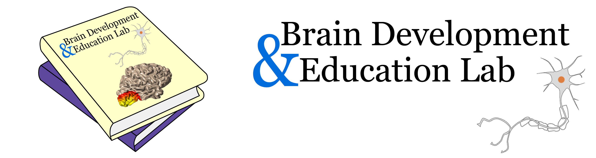

Automated Fiber Quantification in Python (pyAFQ)#
pyAFQ is an open-source software tool for the analysis of brain white matter in diffusion MRI measurements. It implements a complete and automated data processing pipeline for tractometry, from raw DTI data to white matter tract identification, as well as quantification of tissue properties along the length of the major long-range brain white matter connections.
To get started, please refer to the getting started page. In particular, these two examples are very useful:
This example shows you how to run pyAFQ on a BIDS dataset, where pyAFQ uses the BIDS structure to find necessary files: Getting started with pyAFQ - GroupAFQ
This example shows you how to run pyAFQ on any dataset, where input file paths are given explicitly: Getting started with pyAFQ - ParticipantAFQ
What is the difference between tractography and tractometry? See in the explanations page.
For more detailed information on the variety of uses of pyAFQ, see the how to page. In particular, this one example is useful for understanding tractometry:
For a detailed description of the methods and objects used in pyAFQ, see the reference documentation page.
Here are some useful reference pages:
For a list of the major fiber tracts supported by pyAFQ, see the Major Fiber Tracts page.
For a list of the supported tissue properties, see the Tissue Properties page.
For a grand list of all pyAFQ outputs, see The pyAFQ API methods.
For a grand list of all pyAFQ arguments, see The pyAFQ API optional arguments.
Citing#
If you use pyAFQ in a scientific publication, please cite our papers:
Kruper J, Richie-Halford A, Qiao J, Gilmore A, Chang K, Grotheer M, et al. (2025) A software ecosystem for brain tractometry processing, analysis, and insight. PLoS Comput Biol 21(8): e1013323. https://doi.org/10.1371/journal.pcbi.1013323
Kruper, J., Yeatman, J. D., Richie-Halford, A., Bloom, D., Grotheer, M., Caffarra, S., Kiar, G., Karipidis, I. I., Roy, E., Chandio, B. Q., Garyfallidis, E., & Rokem, A. (2021) Evaluating the Reliability of Human Brain White Matter Tractometry. Aperture Neuro 1:1 https://doi.org/10.52294/e6198273-b8e3-4b63-babb-6e6b0da10669.
@article{kruper2025software,
title={A software ecosystem for brain tractometry processing, analysis, and insight},
author={Kruper, John and Richie-Halford, Adam and Qiao, Joanna and Gilmore, Asa and Chang, Kelly and Grotheer, Mareike and Roy, Ethan and Caffarra, Sendy and Gomez, Teresa and Chou, Sam and others},
journal={PLoS computational biology},
volume={21},
number={8},
pages={e1013323},
year={2025},
publisher={Public Library of Science San Francisco, CA USA},
doi={10.1371/journal.pcbi.1013323},
}
@article {Kruper2021-xb,
title = "Evaluating the reliability of human brain white matter
tractometry",
author = "Kruper, John and Yeatman, Jason D and Richie-Halford, Adam and
Bloom, David and Grotheer, Mareike and Caffarra, Sendy and Kiar,
Gregory and Karipidis, Iliana I and Roy, Ethan and Chandio,
Bramsh Q and Garyfallidis, Eleftherios and Rokem, Ariel",
journal = "Apert Neuro",
publisher = "Organization for Human Brain Mapping",
volume = 1,
number = 1,
month = nov,
year = 2021,
doi = {10.52294/e6198273-b8e3-4b63-babb-6e6b0da10669},
}
Guide Layout#
Tutorials
Beginner’s guide to pyAFQ. This guide introduces pyAFQ’S basic concepts and walks through fundamentals of using the software.
How To
User’s guide to pyAFQ. This guide assumes you know the basics and walks through some other commonly used functionality.
Explanations
This guide contains in depth explanations of the various pyAFQ methods.
API Reference
The API Reference contains technical descriptions of methods and objects used in pyAFQ. It also contains descriptions of how methods work and the parameters used for each method.
Acknowledgements#
Work on this software was supported through grant 1RF1MH121868-01 from the National Institutes for Mental Health / The BRAIN Initiative and by a grant from the Gordon & Betty Moore Foundation, and from the Alfred P. Sloan Foundation to the University of Washington eScience Institute, by grant R01EB027585 to Eleftherios Garyfallidis (PI) and Ariel Rokem, grant R01HD095861 to Jason Yeatman, R21HD092771 to Jason Yeatman and Pat Kuhl, by NSF grants 1551330 to Jason Yeatman and 1934292 to Magda Balazinska (PI) and Ariel Rokem (co-PI). John Kruper’s work on pyAFQ has been supported through the NSF Graduate Research Fellowship program (DGE-2140004).
